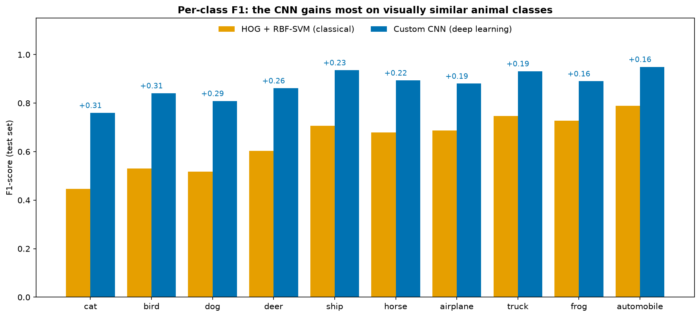
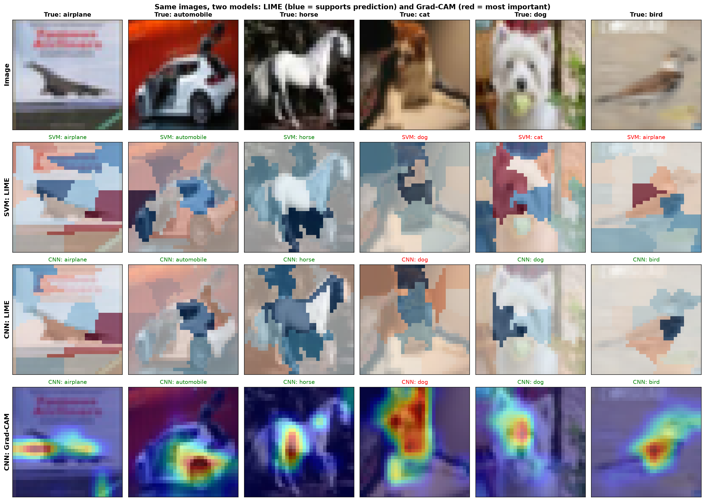
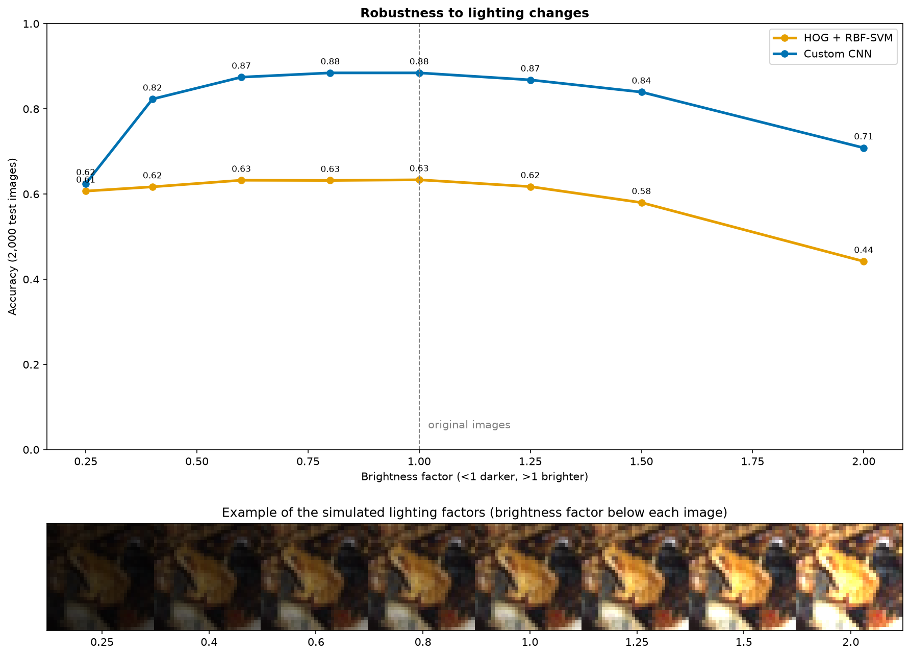
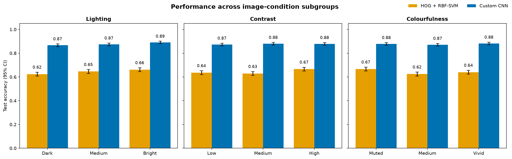

Section 03 · Unit 11
Individual Project
The individual project completed in Unit 11, from the approach I took to the results, and an evaluation of the final project against the initial proposal from Unit 6.
Project Overview
Project Brief
The summative individual assessment (40% of the module), Comparative Intelligence and Ethics in Machine Learning Systems, asked for a 20-minute recorded presentation with slides, a transcript and a Jupyter notebook comparing one classical and one deep learning model on the same dataset, including robust validation, at least one explainability method, a subgroup bias analysis, ethics and a deployment discussion. I chose Track A (computer vision) and the CIFAR-10 dataset (Krizhevsky, 2009): 60,000 colour images of 32×32 pixels in ten balanced classes, split identically for both models into 45,000 training, 5,000 validation and 10,000 test images.
Approach
Classical model. Each image was described by 1,812 hand-crafted features: histograms of oriented gradients for shape (Dalal and Triggs, 2005) and colour histograms. After scaling and principal component analysis, a support vector machine with an RBF kernel (Cortes and Vapnik, 1995) was tuned by grid search and evaluated with stratified five-fold cross-validation (Kohavi, 1995).
Deep learning model. A three-block VGG-style convolutional neural network (Simonyan and Zisserman, 2015) with batch normalisation (Ioffe and Szegedy, 2015), dropout (Srivastava et al., 2014) and data augmentation, 3.4 million parameters, trained with Adam (Kingma and Ba, 2015) and early stopping on a Colab GPU. Ablation runs compared learning rates, dropout, batch sizes, optimisers and architectures, and a fine-tuned EfficientNetB0 (Tan and Le, 2019) served as a transfer-learning reference.
Methods, Tools & Technologies
Python, scikit-learn (Pedregosa et al., 2011), scikit-image (van der Walt et al., 2014), TensorFlow/Keras (Abadi et al., 2016), LIME (Ribeiro, Singh and Guestrin, 2016) and Grad-CAM (Selvaraju et al., 2017).
Results & Evaluation
Results
| Model (10,000 test images) | Accuracy | Macro F1 | Training | Validation |
|---|---|---|---|---|
| HOG features + RBF-SVM | 64.4% | 0.643 | 2.5 min, laptop CPU | Stratified 5-fold CV |
| Custom CNN | 87.7% | 0.875 | 15.3 min, cloud GPU | Hold-out set and early stopping |
| EfficientNetB0 (reference) | 56.7% | 0.560 | 20 epochs, cloud GPU | Hold-out set |
The CNN won on every class by about 23 points, with the largest gains on the look-alike animals (cat +0.31, bird +0.31, dog +0.29 in F1). Cross-validation exposed what training scores hid: the SVM scored 99.7% on its training folds but 63.0% on its validation folds, a severe overfit, with 85% of the training images becoming support vectors.

Explainability
Permutation importance showed the SVM is almost purely a shape model: shuffling its gradient features dropped accuracy by 54.7 points, its colour features by only 1.8. LIME revealed a shortcut: the SVM called a bird an airplane because of the smooth, pale, sky-like background. Grad-CAM showed the CNN focusing on the object, and its attention spreading towards the border when it was wrong (47% of evidence in the border for errors against 37% for correct predictions), which I proposed as a flag for human review.

Bias and Robustness
Splitting the test set by lighting, contrast and colourfulness, both models were less accurate on dark images, although part of the gap came from which classes appear in dark images. A controlled experiment then changed only the brightness: at a quarter of normal brightness the CNN fell from 88% to 62% while the SVM lost only about 3 points, because its gradient features are normalised. The more accurate model is also the more fragile one in very low light.


What the Results Show
I framed the ethics around a realistic use: a roadside camera that tells animals from vehicles for wildlife-crossing warnings. There, a missed deer is a safety risk while a false alarm only causes alert fatigue, so recall on animal classes matters most, and the low-light weakness means the system would fail most at dusk and night, when it is needed most. CIFAR-10 itself comes from the web-scraped 80 Million Tiny Images collection (Torralba, Fergus and Freeman, 2008), which was withdrawn after an audit of its contents (Birhane and Prabhu, 2021), and a real camera would capture faces and number plates, which are personal data under the GDPR (European Union, 2016). My recommendation was to deploy the CNN only with safeguards: low-light retraining, high-recall thresholds for animals, human review of low-confidence predictions, and monitoring by subgroup.
“Headline accuracy is not enough.”
Limitations I reported: the CNN was validated on a hold-out set rather than cross-validation because of its training cost, the ablation variants were compared on test rather than validation accuracy, and LIME was applied to only six images.
Skills Demonstrated
- Designing a fair comparison of classical and deep learning models on identical data splits
- Robust validation: grid search, stratified cross-validation, early stopping and confidence intervals
- Explainable AI with permutation importance, LIME and Grad-CAM
- Subgroup bias analysis, including a controlled experiment to separate cause from confounding
- Ethical analysis grounded in a use case, and a deployment design with monitoring and retraining
- Communicating technical results to an audience in a recorded presentation
Unit 6 → Unit 11Final Project vs. Initial Proposal
What Was Proposed
The Unit 6 team project (Group 5) was a classical machine learning analysis of New York Airbnb listings: regression to predict price and k-means to segment supply. The tutor praised its clear method and model comparison, but found that it focused heavily on technical evaluation, gave limited rationale for the techniques chosen, described its segments rather than validating them, and lacked critical discussion of model limitations.
What Was Delivered
The Unit 11 project compared a classical and a deep learning model on CIFAR-10, adding cross-validation, explainability, a subgroup bias analysis, an ethical analysis of a specific use case and a deployment design. An early version of my notebook contained only the deep learning models; the classical model, explainability, bias analysis, ethics and deployment sections were added as the project developed.
What Changed and Why
- Justification of choices: each decision was supported, with six reasons for the dataset, a benchmark for the classical model and ablation runs for the CNN design, answering the tutor’s point about limited rationale.
- Validation over description: where the Airbnb segments were described by their averages, the Unit 11 results were tested with cross-validation, confidence intervals and significance tests across subgroups.
- Critical discussion of limitations: the project reported its own weaknesses, including the hold-out validation, test-set model selection and the small LIME sample.
- Broader recommendation: instead of a single pricing tool, the recommendation set out conditions for deployment, monitoring and retraining.
Lessons Learned
Comparing the two projects showed me that technical accuracy is only part of a good machine learning project. The Unit 6 feedback taught me to justify each choice, validate rather than describe, and be open about limitations, and the Unit 11 project is where I applied those lessons.